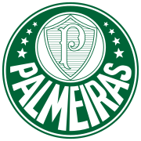

time: Flamengo maiorRival: Vasco temMundial: true foiRebaixado: false libertadores: 2 brasileirao: 8 copaDoBrasil: 3
 time: Palmeiras maiorRival: Corinthians temMundial: false foiRebaixado: true libertadores: 3 brasileirao: 10 copaDoBrasil: 4
time: Cruzeiro maiorRival: Atlético MG temMundial: false foiRebaixado: true libertadores: 2 brasileirao: 4 copaDoBrasil: 6
time: Athletico Paranaense maiorRival: Coritiba temMundial: false foiRebaixado: true libertadores: 0 brasileirao: 1 copaDoBrasil: 1